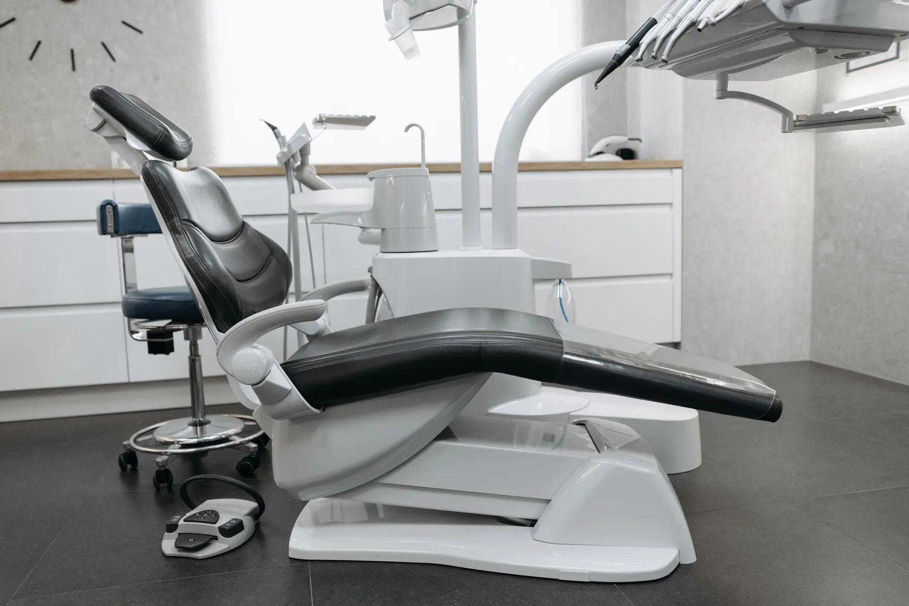
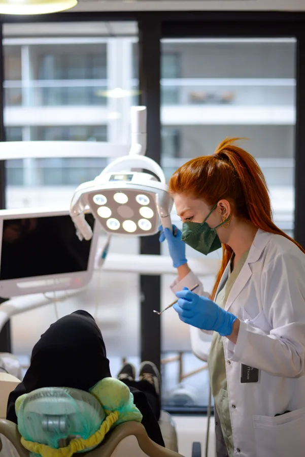
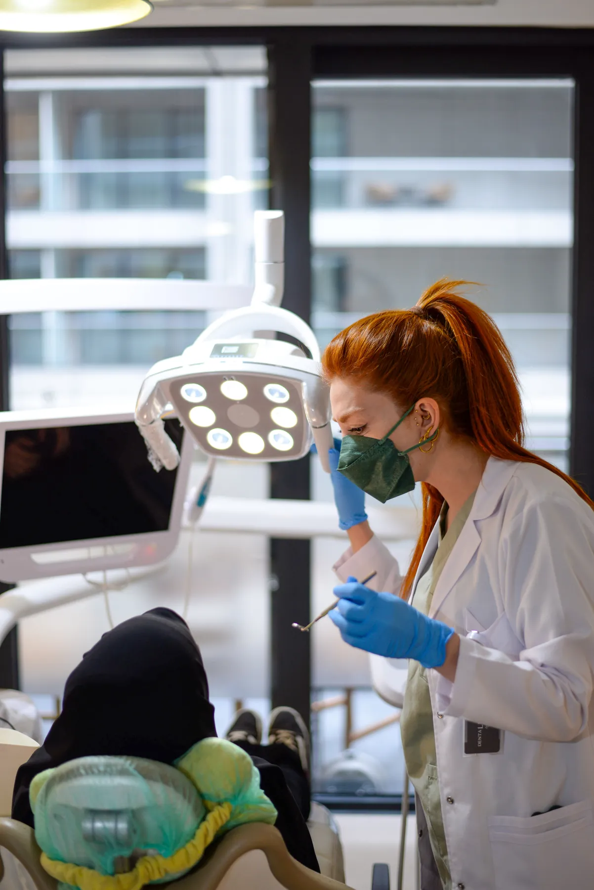
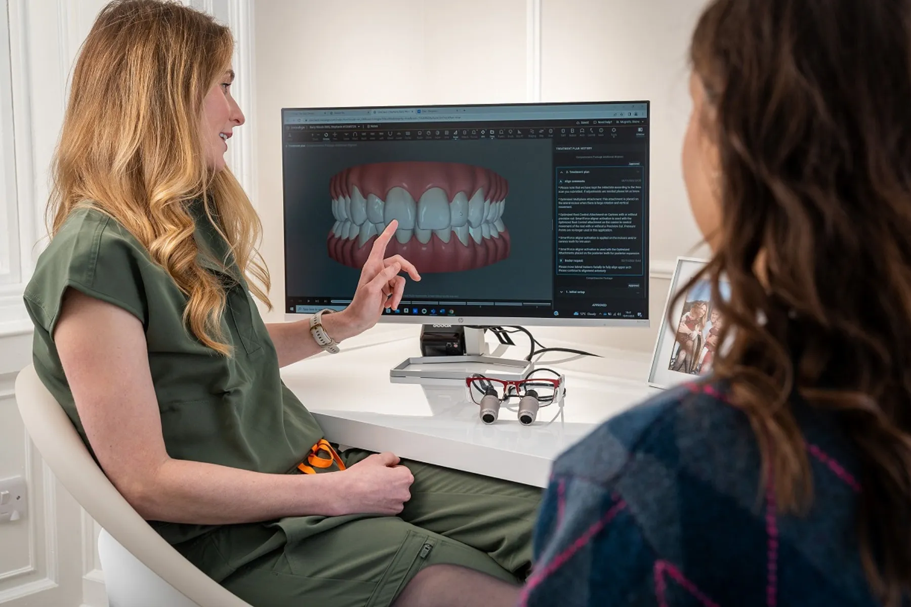
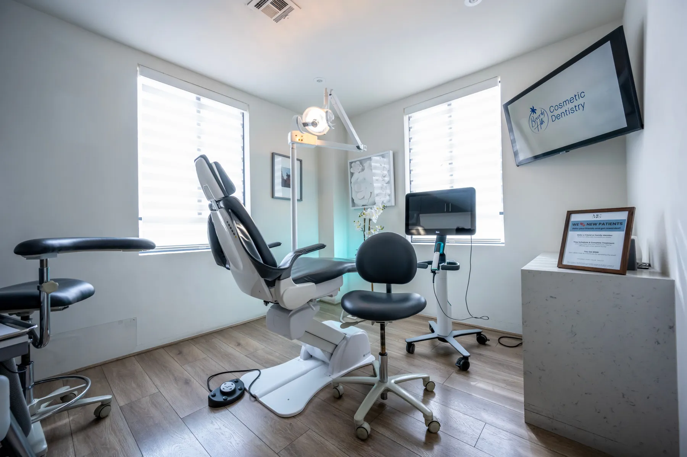
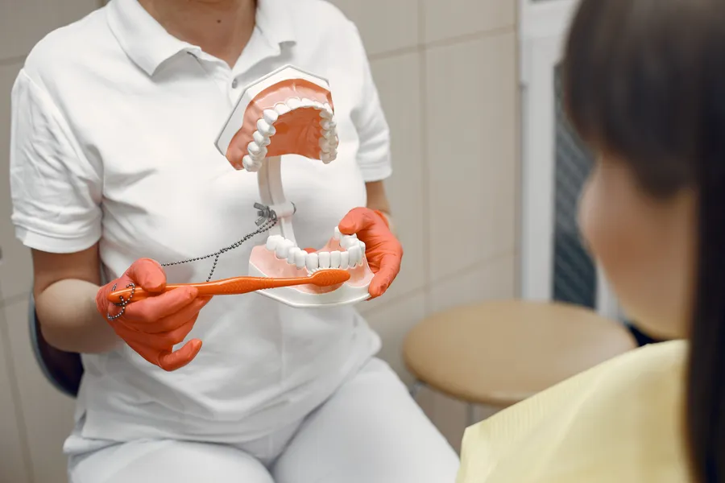
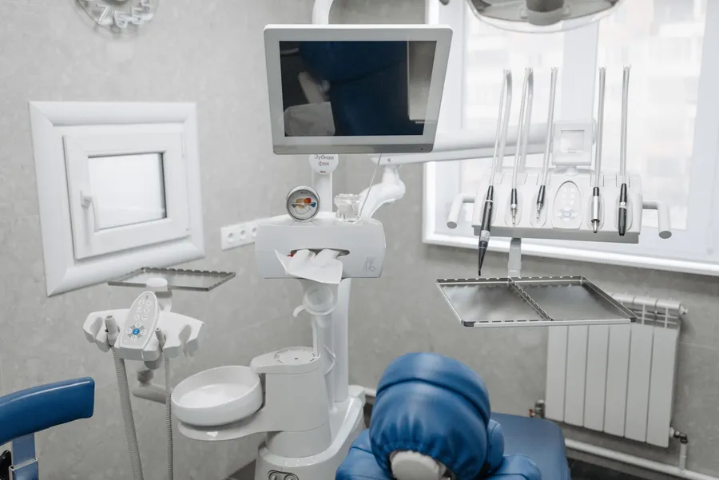
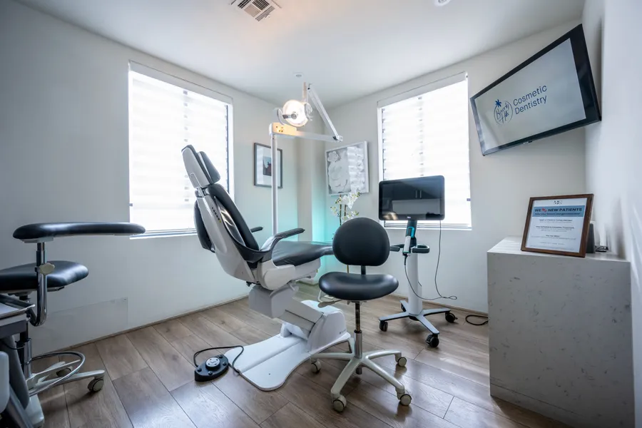
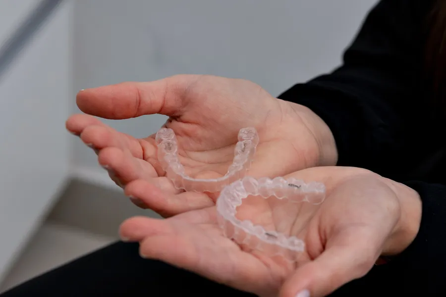
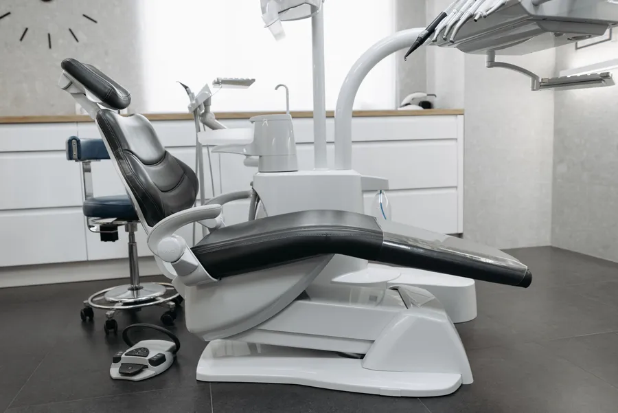

Şehir yavaşlar,
Moderna açık.
Sabah dokuzdan gece on bire kadar hasta kabul. Randevu masasında konuyu, dişi, günü ve saati seçin; mesajınız hazır.
Diş hekimine gitmek çoğu zaman izin almak demektir. Moderna'da akşam saatleri de randevu saatidir: iş çıkışı, okul sonrası, günün sonunda.


Güne kontrolle başlayın.
Erken saatler; esnek çalışanlar, emekliler ve güne erken başlayanlar için. Muayene, kontrol ve diş temizliği gibi kısa randevular.
Moderna kids, ders saatine denk gelmez.
Çocuğunuzun ilk kontrolü ya da süt dişi tedavisi okul sonrasına planlanır; ders kaçırmadan, acele etmeden.

İzin almadan, mesaiden sonra.
İmplant ya da ortodonti gibi birkaç randevu süren tedavilerde kontrolleri iş çıkışına koymak, süreci aksatmadan sürdürmeyi kolaylaştırır.
Günü geç bitenler için de.
Vardiyalı çalışanlar, esnaf, günü akşam biten herkes için son randevular. Kapanış 23.00; kesin saati klinik yazar.
Üç bölüm, tek kapı.
Başlıklar Instagram'daki öne çıkanlarınızdan (İmplant, Ortodonti, Moderna kids). Metinler genel bilgilendirmedir; tedavi planı muayenede belirlenir. Başlığa dokunun, açılsın.

Sakin oda,
acele yok.
Konu, diş, saat: mesaj hazır.
Birkaç kişi, tek mesaj.
Aileyle art arda kontrol ya da iş arkadaşlarıyla mesai sonrası kontrol günü için talep. Klinik uygunluğa göre saatleri size yazar.


Lozan Caddesi, No:100.
- Adres
- Akkonak Mah. Lozan Cad. No:100, Merkezefendi / Denizli
- Telefon · WhatsApp
- 0543 767 95 85
- Çalışma saatleri
- 09.00 – 23.00
- @modernadentalclinic
Seçin, yol tarifi o noktadan açılır.
Odadan kareler.



Akşam da olsa yazın.
Sağlık tanıtım kurallarına uygun: bu sayfada fiyat, kampanya, hasta yorumu ya da öncesi-sonrası görsel yoktur. Sorularınızı doğrudan kliniğe iletirsiniz.